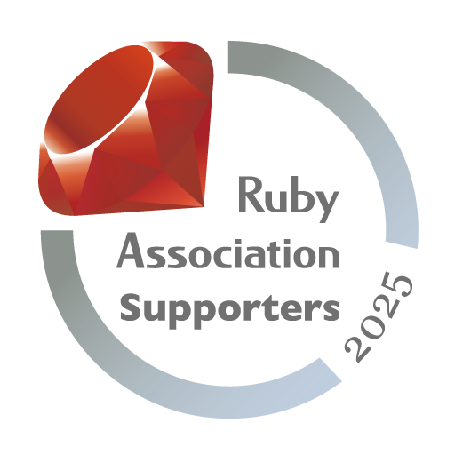

I'm a software developer based in Tokyo, Japan. My primary expertise is Ruby and Ruby on Rails.
I've been doing software development for over 10 years and been passionate.
I've been involved mostly in early stage projects, but also interested in improving/fixing legacy codes/apps.
I'm good at using tools such as RSpec and RuboCop with years of experiences.
I like Ruby so much that I've created several gems. Please visit GitHub if you're interested.
My primary focus of development is now on Alba, a JSON serializer for Ruby. It features performance, usability and extensibility. If you're looking for a way to serialize objects into JSON with Ruby, you can try it out.
I use Neovim as my primary text editor and I love it (in fact, I talked about my Neovim usage to over 100 people in tech conference devoted to Vim!)
If you'd like to know more about my development environment, please see my my dotfiles.
I gave a talk at Rails World 2025 about reading Rails 1.0 source code.
I was a speaker at RubyConf 2021. In 2023 I gave a lightning talk at RubyKaigi, and gave talks at Euruko 2023 and RubyConfTw2023.
In 2024, I gave a talk at Red Dot Ruby Conference 2024 about DSL.
I also give talks in various meetups about many topics.
I'm organizing a few Ruby communities in Tokyo and online: Grow.rb, Entaku.rb and Rubygems Code Reading Meetup.
I'm also a chief organizer of Kaigi on Rails, which started in 2020 as a new tech conference focusing on Web development.
I also was one of the organizers of VimConf 2019 which was successful.
I was born and raised in Japan and I'm a native speaker of Japanese. "OKURA" is my family name and "Masafumi" is my given name: we have family name first and given name last.
I practiced my English in Japan. My TOEIC score was 920 several years ago.
I enjoy brewing coffee. My Instagram account lists my photos on coffee.
Reading Rails 1.0 Source Code
Writing Minitest clone at RubyConfTw 2023
Reading RSpec code at Euruko 2023
Lightning talk at RubyKaigi 2023 about Vim and Ruby
On RubyConf 2021 I talked about Ruby method and how to control them.
I joined Roby Rogues a few times.
If you find my work helpful, please consider supporting my on GitHub Sponsor. Thank you!
And I'm a proud supporter of Ruby Association!
Talk to me via Zoom anytime!
okuramasafumi at gmail.com